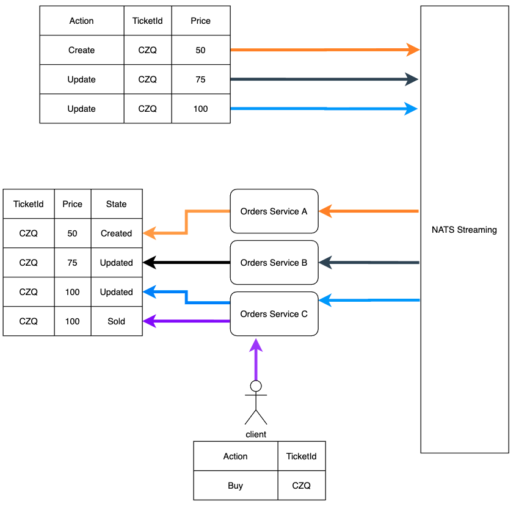

Created by Peter Gross, last modified on Sep 14, 2020
One of the main concerns when using a Message Stream is that it does not guarantee that the messages that are sent will arrive in the order they are sent.
In a low transaction rate system, this will not be an issue, except when a service goes down.. Remember we have designed the system so the services are independent of one another.
In this example we have the ticketing service creating a ticket and updating the information twice sending these updates over to the orders service.
If the updates were done quickly, or the orders service was down for a period and it is now receiving all of the updates in a batch very quickly, the £100 update may be received first and then the £75 update, this results in a ticker price of £75 which is incorrect.

To make sure our system processes these updates in the correct order we send the version of the ticket record with the rest of the details.
When processing the message we check the current version of the ticket record we have, and if it is not one less than the one on the message we throw the message back to the streaming service until we have processed the one we were expecting.
e.g. we create the ticket and orders has a version record, we update the price to £75 and give it a version of 1, then update the price and give it a version of 2.
If the orders service has a ticket with a price of £50 and version 0, then receives an update to £100 with a version of two, then it will rejectthe update and send the message back to the message queue until it has processed the message with a version of 1
When making a payment we can then specify the version of the ticket we were buying
{kind=link}
{kind=link}
{kind=link}
{kind=link}
{kind=link}